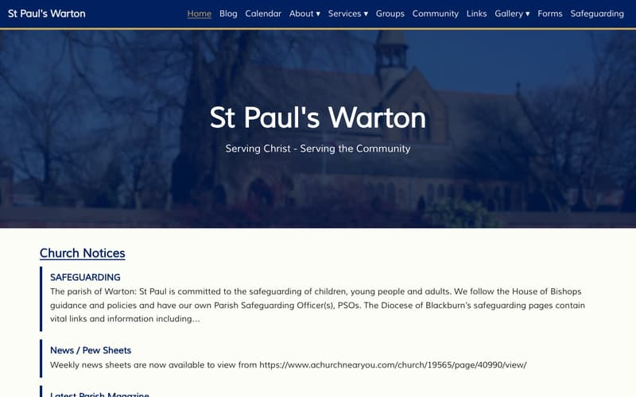
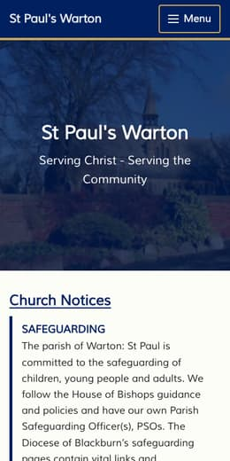

St Paul's Warton
Here are ten ways the website could look. Number 1 is the site as it is now. The others go from small tidy-ups to something completely new.
Tap a picture to open that design. The grey bar at the top lets you switch between the home page and a blog article, or step on to the next design. The words and photos are the real ones from the site. Only the home page and one article are filled in, so other links won't go anywhere.
It's worth looking on your phone as well as a computer.
Let us know the two or three you like best, and anything you'd keep or avoid from any of them. Mixing bits from different designs is fine.
The new site as it stands today, built to match the old one.
Same blue and gold, same layout. Tidier and easier to read.
Blue and gold stay, but the home page is arranged differently.
New colours and a new layout. The words and photos stay the same.
Mockups made 20 October 2026. Nothing on the real website has changed.